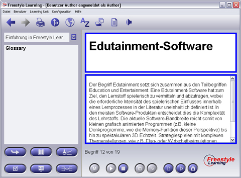

Neben der Repräsentation von Begriffen bietet die Glossary View im Memory-Modus die Möglichkeit, einzelne Elemente in der Art eines Vokabeltrainings zu vertiefen. Im Rahmen einer Memory-Sitzung werden Ihnen ausgewählte Elemente präsentiert, wobei zunächst jeweils der Name oder der Inhalt des Glossarelements verdeckt ist und auf Knopfdruck aufgedeckt werden kann. Anschließend können Sie die jeweiligen Elemente in verschiedene Memory-Kategorien verschieben wodurch ein gezieltes Lernen ermöglicht wird.

Um eine Memory- Sitzung durchzuführen, wechseln Sie zunächst durch Klicken der"Memory"-Schaltfläche in den Memory-Modus. Anschließend können Sie die Sitzung durch Betätigen der "Start"-Schaltfläche beginnen. Geben Sie im darauf hin erscheinenden Dialog ihre individuelle Lernstrategie an. Dabei haben Sie die Möglichkeit, alle Elemente einer bestimmten Kategorie (Start, Light, Medium sowie Premium – sortiert nach Schwierigkeitsgrad) zu wiederholen. Alternativ kann ihre Sitzung auch die Elemente aufzeigen, die seit einem anzugebenden Datum nicht wiederholt worden sind. Weiter müssen Sie im Dialog angeben, ob im Folgenden Titel oder Inhalt zunächst angegeben werden. Drücken Sie „OK“ um die Memory Sitzung zu starten.
In der Sitzung wird Ihnen jeweils zuerst entweder der Titel oder der Inhalt präsentiert. Als Lerner haben Sie jetzt die Möglichkeit, zu überlegen, was hinter dem aktuell verdeckten Bereich liegt. Durch Betätigen der "Aufdecken"-Schaltfläche wird der Inhalt des verdeckten Bereichs aufgelöst. Um den aktuellen Durchlauf abzuschließen, müssen Sie jetzt ihren Lernerfolg im System protokollieren. Dabei haben Sie die Möglichkeit, das aufgedeckte Element in eine fortgeschrittene Kategorie zu verschieben, es in der aktuellen zu belassen oder es wieder in einer einfacheren einzuordnen.
Nachdem alle Elemente der aktuellen Sitzung angezeigt wurden, bekommen Sie eine Statistik angezeigt. Durch betätigen der "Stop"-Schaltfläche wird die Memory-Sitzung abgeschlossen. Zusätzlich können Sie mit der "Stop"-Schaltfläche auch jederzeit während eines Durchlaufs abbrechen.
Hinweis: Es findet keine Lernkontrolle durch den Memory-Manager statt! Ob sie eine Zuordnung gewusst haben oder nicht, bestätigen manuell durch Zuordnung zu den entsprechenden Kategorien.
Kategorien-Zuordnung
 |
Aufdecken | Deckt die nicht sichtbare Fläche des aktuellen Elements auf |
 |
Aufwärts | Bewegt das aktuell bearbeitete Element eine Kategorie nach oben |
 |
Belassen | Belässt das aktuell bearbeitete Element in der ursprünglichen Kategorie |
 |
Abwärts | Bewegt das aktuell bearbeitete Element eine Kategorie nach unten |
Zurück zur Hauptseite